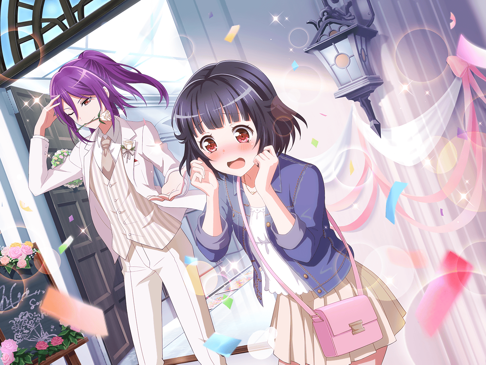

CiRCLE カフェ
りみ
あっ、
このケーキ美味しい
沙綾
こっちのプリンも美味しいよ。
一口いる？
りみ
うん、ありがと〜
それじゃあ、一口ずつ食べてみよう？
沙綾
ナイスアイディア。
それじゃあケーキ、一口いただくね
沙綾
……ん～！
確かに、このケーキ美味しいね！
りみ
そのプリンも、滑らかですっごく美味しい♪
次来た時は、私も頼んでみようっと
りみ
……それにしても、人が増えて来たね。
やっぱり、お昼時だからかな？
沙綾
それにプラスで、今日は休日だしね
りみ
きっとそうだね。
……って、あれ？ あの子は……
沙綾
どうしたの？
誰かいた？？
りみ
あそこにいるのって
あこちゃんじゃないかな？
沙綾
あ、本当だ。
席空いてなくて困ってるみたいだね
りみ
呼んであげようか。
おーい、あこちゃ～ん！
あこ
あ、さあやちゃんたち！
こんにちは！
沙綾
こんにちは、あこ。
席がないなら一緒に座る？
あこ
いいの！？
ありがとうさあやちゃん！
りみ
あこちゃん、このケーキ美味しいよ。
一口食べてみる？
沙綾
あ、このプリンも美味しいよ
あこ
わぁ、どっちも美味しそー！
じゃあ、ふたりにはあこのポテトあげるね！
りみ
ありがとう。
そういえばあこちゃん、今日はお休み？
あこ
うんっ！
Roseliaの練習もないし、これからりんりんと遊ぶの！
その前にお腹すいちゃったから、ポテト食べようと思って
あこ
あ、そういえば
ここに来る前にあのポスター見たよ！
りみ
あのポスター？
それって……結婚式のやつ？
あこ
うんうん！
さあやちゃん、すっごく綺麗だった！
沙綾
そ、そう？
ありがとう
りみ
うん、沙綾ちゃんも綺麗だったし……
薫さんもカッコよかったよね
あこ
うん！
かおるもすごくカッコよかった！
沙綾
そうだね。
薫さんのタキシード姿は、すごく似合ってた
あこ
さっすがだよね！
なんでも着こなしちゃうんだから！
りみ
私、あまりの素敵さに
見惚れちゃったなぁ……
沙綾
わかる。
私も気を抜くと、撮影ってことを
忘れちゃいそうになりそうだったよ
あこ
そこにいるだけで、周りを魅了するかおる……
やっぱり、すごい！ カッコイイ！！
りみ
薫さんって、演劇部でもあんな感じなのかな？
沙綾
あ、それ気になってたんだよね。
いつもあんなに輝いてるのかなぁって
あこ
どうかなー？
でも、あこはかおるなら、
どこだってピカピカに輝いてると思うなぁ
りみ
確かに……
今度、演劇部の薫さんも見てみたいなぁ……
あこ
それなら、今度、見学に行こうよ！
かおるなら、喜んでＯＫしてくれると思うし！
りみ
うん、そうしてみる
沙綾
あ、私も行きたい。
気になるもん
あこ
あこも一緒に行くー！
りみ
演劇部でも薫さん、スーツ着てるのかな？
あ、でも……薫さんってドレスも似合いそう
りみ
見てみたいなぁ……
きっと、ドレス姿も素敵なんだろうなぁ……
あこ
演劇部だから、見学に行けば
いつかは見られるんじゃないかなー？
りみ
見学もいいけど
機会があったら、薫さんの舞台も見てみたいなぁ
沙綾
あ、じゃあその舞台ではぜひとも
パン屋さんの役をやってほしいな
沙綾
薫さん、エプロンも似合いそうだし
あこ
じゃあじゃあ、
あこは、かおるには魔王の衣装を着てほしい！
りみ
私は……
薫さんには、もっとカッコいい衣装を着てほしいな
沙綾
あはは、りみりんは、
すっかり薫さんのファンになっちゃったみたいだね
りみ
えへへ……うんっ♪